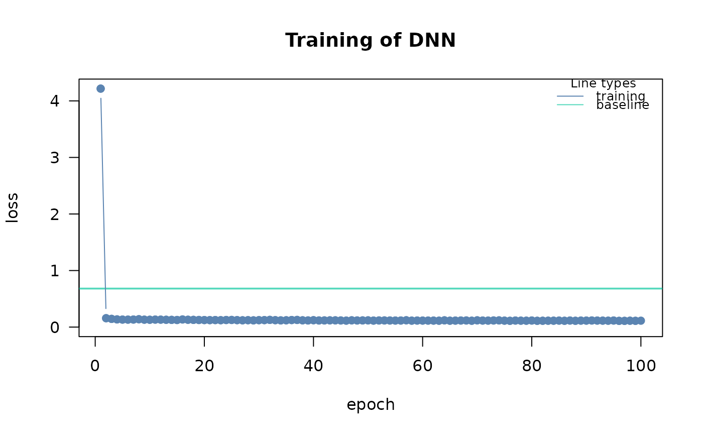

Usage
config_optimizer(
type = c("adam", "adadelta", "adagrad", "rmsprop", "rprop", "sgd", "ignite_adam"),
verbose = FALSE,
...
)Value
object of class cito_optim to give to dnn
Details
different optimizer need different variables, this function will tell you how the variables are set. For more information see the corresponding functions:
adam:
optim_adamadadelta:
optim_adadeltaadagrad:
optim_adagradrmsprop:
optim_rmsproprprop:
optim_rpropsgd:
optim_sgd
Examples
# \donttest{
if(torch::torch_is_installed()){
library(cito)
# create optimizer object
opt <- config_optimizer(type = "adagrad",
lr_decay = 1e-04,
weight_decay = 0.1,
verbose = TRUE)
# Build and train Network
nn.fit<- dnn(Sepal.Length~., data = datasets::iris, optimizer = opt)
}
#> set adagrad optimizer with following values
#> lr_decay: [1e-04]
#> weight_decay: [0.1]
#> initial_accumulator_value: [0]
#> eps: [1e-10]
#> Loss at epoch 1: 4.321494, lr: 0.01000

#> Loss at epoch 2: 0.174433, lr: 0.01000
#> Loss at epoch 3: 0.158128, lr: 0.01000
#> Loss at epoch 4: 0.159207, lr: 0.01000
#> Loss at epoch 5: 0.146822, lr: 0.01000
#> Loss at epoch 6: 0.146365, lr: 0.01000
#> Loss at epoch 7: 0.145022, lr: 0.01000
#> Loss at epoch 8: 0.145910, lr: 0.01000
#> Loss at epoch 9: 0.148143, lr: 0.01000
#> Loss at epoch 10: 0.139901, lr: 0.01000
#> Loss at epoch 11: 0.149695, lr: 0.01000
#> Loss at epoch 12: 0.139371, lr: 0.01000
#> Loss at epoch 13: 0.144115, lr: 0.01000
#> Loss at epoch 14: 0.142090, lr: 0.01000
#> Loss at epoch 15: 0.142677, lr: 0.01000
#> Loss at epoch 16: 0.147975, lr: 0.01000
#> Loss at epoch 17: 0.137335, lr: 0.01000
#> Loss at epoch 18: 0.133823, lr: 0.01000
#> Loss at epoch 19: 0.137425, lr: 0.01000
#> Loss at epoch 20: 0.135180, lr: 0.01000
#> Loss at epoch 21: 0.139772, lr: 0.01000
#> Loss at epoch 22: 0.135590, lr: 0.01000
#> Loss at epoch 23: 0.132956, lr: 0.01000
#> Loss at epoch 24: 0.131984, lr: 0.01000
#> Loss at epoch 25: 0.129648, lr: 0.01000
#> Loss at epoch 26: 0.131407, lr: 0.01000
#> Loss at epoch 27: 0.128359, lr: 0.01000
#> Loss at epoch 28: 0.131280, lr: 0.01000
#> Loss at epoch 29: 0.130557, lr: 0.01000
#> Loss at epoch 30: 0.132684, lr: 0.01000
#> Loss at epoch 31: 0.131716, lr: 0.01000
#> Loss at epoch 32: 0.128317, lr: 0.01000
#> Loss at epoch 33: 0.129145, lr: 0.01000
#> Loss at epoch 34: 0.130885, lr: 0.01000
#> Loss at epoch 35: 0.132523, lr: 0.01000
#> Loss at epoch 36: 0.129404, lr: 0.01000
#> Loss at epoch 37: 0.131562, lr: 0.01000
#> Loss at epoch 38: 0.129672, lr: 0.01000
#> Loss at epoch 39: 0.128951, lr: 0.01000
#> Loss at epoch 40: 0.131903, lr: 0.01000
#> Loss at epoch 41: 0.129180, lr: 0.01000
#> Loss at epoch 42: 0.135353, lr: 0.01000
#> Loss at epoch 43: 0.129388, lr: 0.01000
#> Loss at epoch 44: 0.125392, lr: 0.01000
#> Loss at epoch 45: 0.126312, lr: 0.01000
#> Loss at epoch 46: 0.125655, lr: 0.01000
#> Loss at epoch 47: 0.126859, lr: 0.01000
#> Loss at epoch 48: 0.133349, lr: 0.01000
#> Loss at epoch 49: 0.124402, lr: 0.01000
#> Loss at epoch 50: 0.126151, lr: 0.01000
#> Loss at epoch 51: 0.129835, lr: 0.01000
#> Loss at epoch 52: 0.128498, lr: 0.01000
#> Loss at epoch 53: 0.124287, lr: 0.01000
#> Loss at epoch 54: 0.131730, lr: 0.01000
#> Loss at epoch 55: 0.121250, lr: 0.01000
#> Loss at epoch 56: 0.125796, lr: 0.01000
#> Loss at epoch 57: 0.122030, lr: 0.01000
#> Loss at epoch 58: 0.125323, lr: 0.01000
#> Loss at epoch 59: 0.125981, lr: 0.01000
#> Loss at epoch 60: 0.127447, lr: 0.01000
#> Loss at epoch 61: 0.122908, lr: 0.01000
#> Loss at epoch 62: 0.123683, lr: 0.01000
#> Loss at epoch 63: 0.123729, lr: 0.01000
#> Loss at epoch 64: 0.122770, lr: 0.01000
#> Loss at epoch 65: 0.121061, lr: 0.01000
#> Loss at epoch 66: 0.122104, lr: 0.01000
#> Loss at epoch 67: 0.130369, lr: 0.01000
#> Loss at epoch 68: 0.120092, lr: 0.01000
#> Loss at epoch 69: 0.122395, lr: 0.01000
#> Loss at epoch 70: 0.122428, lr: 0.01000
#> Loss at epoch 71: 0.125065, lr: 0.01000
#> Loss at epoch 72: 0.123102, lr: 0.01000
#> Loss at epoch 73: 0.119013, lr: 0.01000
#> Loss at epoch 74: 0.122084, lr: 0.01000
#> Loss at epoch 75: 0.120168, lr: 0.01000
#> Loss at epoch 76: 0.119343, lr: 0.01000
#> Loss at epoch 77: 0.123666, lr: 0.01000
#> Loss at epoch 78: 0.121556, lr: 0.01000
#> Loss at epoch 79: 0.123190, lr: 0.01000
#> Loss at epoch 80: 0.120927, lr: 0.01000
#> Loss at epoch 81: 0.119064, lr: 0.01000
#> Loss at epoch 82: 0.119823, lr: 0.01000
#> Loss at epoch 83: 0.119140, lr: 0.01000
#> Loss at epoch 84: 0.119082, lr: 0.01000
#> Loss at epoch 85: 0.122466, lr: 0.01000
#> Loss at epoch 86: 0.119060, lr: 0.01000
#> Loss at epoch 87: 0.121866, lr: 0.01000
#> Loss at epoch 88: 0.118904, lr: 0.01000
#> Loss at epoch 89: 0.123292, lr: 0.01000
#> Loss at epoch 90: 0.118652, lr: 0.01000
#> Loss at epoch 91: 0.116843, lr: 0.01000
#> Loss at epoch 92: 0.119050, lr: 0.01000
#> Loss at epoch 93: 0.125166, lr: 0.01000
#> Loss at epoch 94: 0.117467, lr: 0.01000
#> Loss at epoch 95: 0.120157, lr: 0.01000
#> Loss at epoch 96: 0.121383, lr: 0.01000
#> Loss at epoch 97: 0.117080, lr: 0.01000
#> Loss at epoch 98: 0.117899, lr: 0.01000
#> Loss at epoch 99: 0.115650, lr: 0.01000
#> Loss at epoch 100: 0.118376, lr: 0.01000
# }